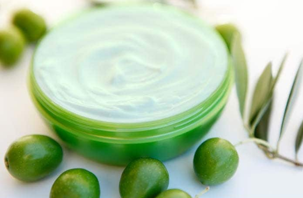
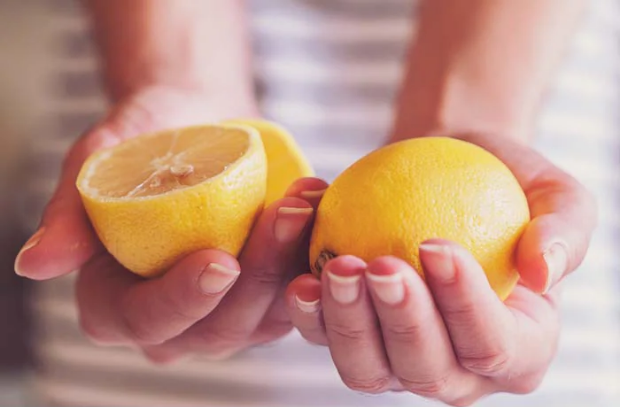
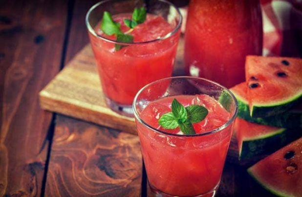
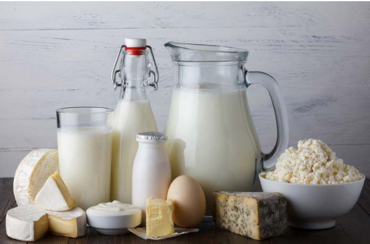
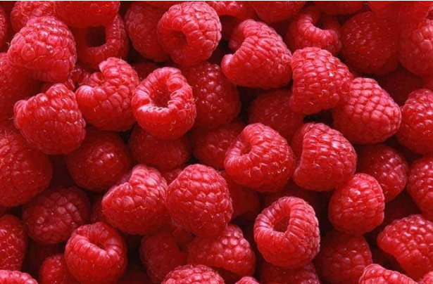
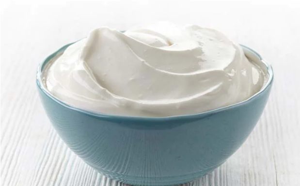
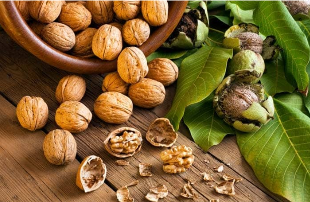
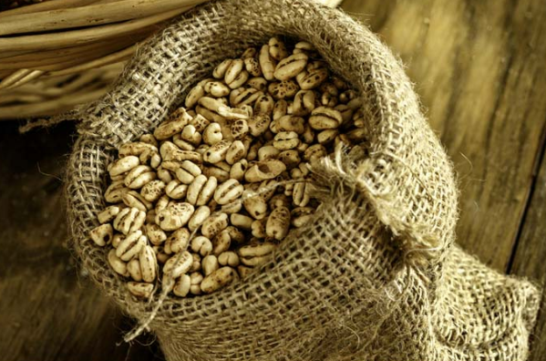
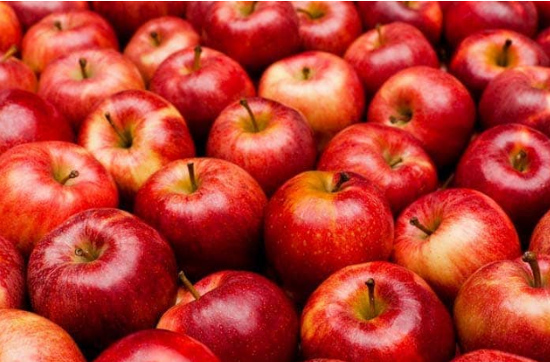

Water carries nutrition and oxygen to your internal body, keeping organs nourished, vital, and fit to fight acne
Olive oil lotion absorbs into skin without clogging pores, allowing skin to breathe which in turn help prevent acne.
Lemon juice helps in eliminating acid waste and cleansing the liver with citric acid and building up enzymes to eliminate blood toxins. It also flushes out pores and keeps your skin feeling fresh and bright.
Watermelon is very useful for removing blemishes on the skin. It is rich in vitamins A, B and C and keeps the skin fresh, radiant and hydrated. It also prevents eruption of acne and remove scars and marks of acne.
Eating a balanced diet is the best way to have a healthy skin. Low-fat dairy product consists of vitamin A, which is one of the most important components of healthy skin
Raspberries are a healthy as they are loaded with vitamins, antioxidants and fiber. These are rich in phytochemicals that are protective of skin.
Yogurt has antifungal and antibacterial qualities, so it is useful for cleansing the skin and unblocking clogged pores.
Eating walnuts regularly help to improve the smoothness and softness of the skin. Walnuts oils contain linoleic acid, which helps to maintain the skin's structure, keeping it watertight and well hydrated.
Dietary selenium comes from nuts, cereals etc. Some studies show that even skin damaged by the sun may suffer fewer consequences if selenium levels are high
Apples contain lots of pectin and it is the enemy of the acne. So, remember to eat the skin too as pectin is mostly concentrated there.